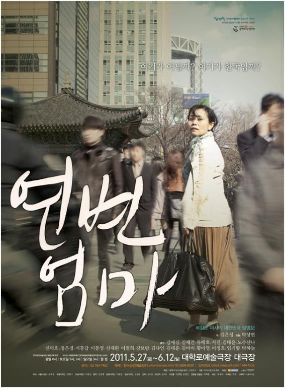

치매에 걸린 전직 육군 장성 전희복, 전투적으로 세상을 사는 아버지 전강돈, 딸의 의대 진학에 매달리는 어머니, 진보를 자처하는 아들, 프랑스에 가고 싶은 딸. 이들이 사는 고급 아파트에 연변에서 온 가정부 복길순이 들어온다. 그의 목표는 한국에서 소식이 끊긴 딸을 찾는 것과 다친 아들의 수술비를 버는 것. 한 가정과 그를 둘러싼 사회가 서로 닮아 있다는 데서 출발해, 두 개의 시계처럼 각각 파탄을 향해 가는 전씨 집안과 남한의 도시들을 그린다.
2011.5.27–6.12 / 대학로예술극장 대극장
이전: 〈나는야쎅쓰왕〉 | 다음: 〈아무튼백석〉
아카이브로 돌아가기 | 아무 작품이나
발행일 2026.11.9